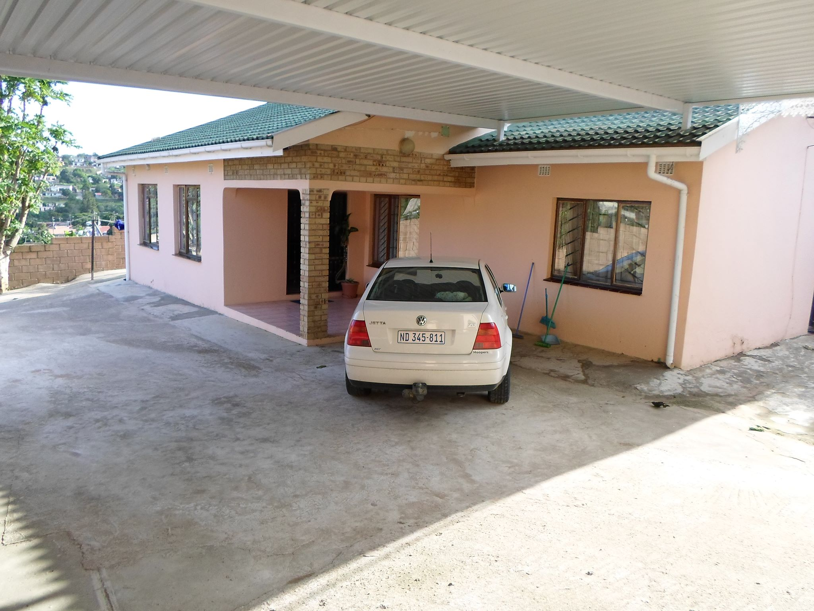
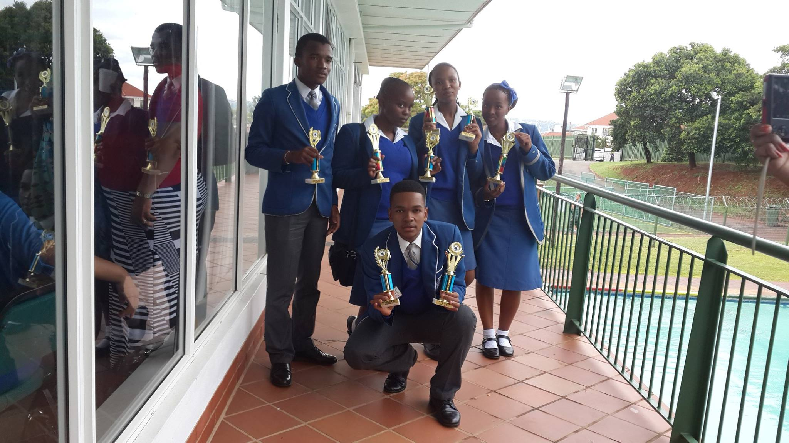
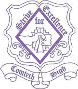

Personal Information

My name is Wandile Anderson Khowa, Iam 21 years old and I was born and bred in South Africa's second biggest township - Umlazi. It is located in the East side of KZN's town called Durban. Being raised in a township is not the easiest of environments to grow up in but I managed to come out unscathed. I went to a primary school called Khuthala Junior Primary School. It is a 10 minute walk from my house and almost all my friends went to the same school so I was overjoyed when I attended my first class.
After 4th grade, my parents moved me to a former model-C school - Fynnlands Senior Primary School - in persuit of better education. It succeeded because I managed to pick up a reasonable work-ethic and saw the importance of having high grades. At this age, I was convinced I was going to be a teacher because of how funny and intelligent I thought my mathematics teacher was.


I attended high in a school called Umlazi Comprehensive Technical High School which is a school in the township. I disliked this downgrade haveing come from a better school but I did not challenge my parents' judgement as they always want what is best for me. I was a below average student when I was in 8th grade and 9th grade. My fortunes changed when I came a book called The Secret. This book changed my thinking and my whole perception of life.
I began pushing my limits and striving for more. I made in to the top five in my class in 10th grade and from there onwards, I finished top of my school. At the end of my matric year, I was the top student in Mathematics and Physics in my province! Having passionate teachers with a high work-ethic contributed a lot towards my achiments
